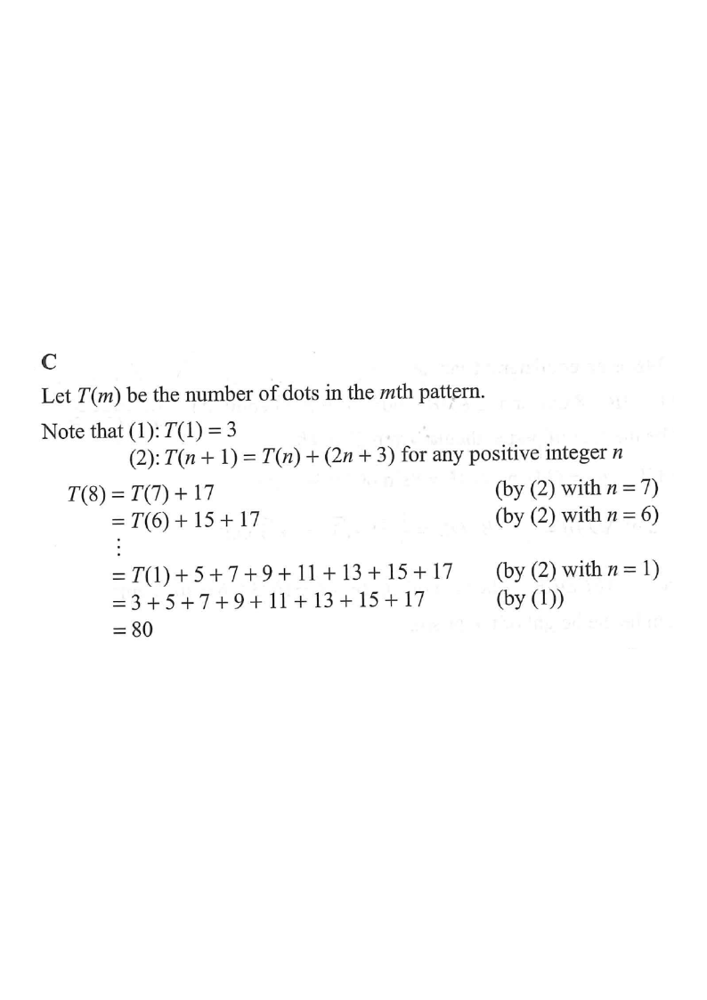

Tap / scroll the steps on the right → the diagram highlights each stage.
In the figure, the 1st pattern consists of 3 dots. For any positive integer $n$, the $(n+1)$th pattern is formed by adding $(2n+3)$ dots to the $n$th pattern. Find the number of dots in the 8th pattern.

Let $T(m)$ be the number of dots in the $m$th pattern.
We are given:
(1) $T(1) = 3$
and
(2) $T(n+1) = T(n) + (2n+3)$ for every positive integer $n$.
Patterns 1,
2, 3 indeed have $3,\ 3+5=8,\ 8+7=15$ dots.
Apply (2) with $n = 7, 6, 5, \dots, 1$:
$T(8) = T(7) + 17$
(by (2) with $n=7$)
$T(7) = T(6) + 15$
(by (2) with $n=6$)
Substituting downwards until we reach the known value $T(1)$:
$T(8) = T(1) + 5 + 7 + 9 + 11 + 13 + 15 + 17$
(by (2) with $n=1,2,\dots,7$)
$T(8) = 3 + 5 + 7 + 9 + 11 + 13 + 15 + 17$
(by (1))
The 7 added terms form an arithmetic sequence with first term $5$,
last term $17$, so their sum is
$\dfrac{7(5+17)}{2} = 7 \times 11 = 77.$
Hence $T(8) = 3 + 77 = 80$.
Since $\displaystyle\sum_{k=1}^{n-1}(2k+3) = (n-1)n + 3(n-1) = n^2 + 2n - 3$,
$T(n) = 3 + (n^2 + 2n - 3) = n^2 + 2n$.
Verify: $T(1)=3$, $T(2)=8$, $T(3)=15$ ✓ — and $T(8) = 8^2 + 2(8) = 64 + 16 = 80$.
Question. The number of dots in the \(m\)th pattern of a sequence is \(T(m)\), where \(T(1)=2\) and \(T(n+1)=T(n)+(3n+1)\) for every positive integer \(n\). Find the number of dots in the 10th pattern.